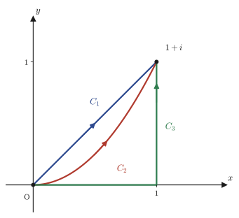

Chapter 25Complex Integration and Cauchy's Integral Theorem
In Chapter 24 we investigated what it means for a complex function $f(z)=u(x,y)+iv(x,y)$ to be “holomorphic” (differentiable), and we saw that it is equivalent to the strong constraint that the Cauchy–Riemann equations $u_x=v_y,\ u_y=-v_x$ impose on the real functions $u,v$ of two variables. In this chapter we finally step into the heart of complex analysis—complex integration. What kind of computation is “integrating” in the world of complex numbers? In a word: “once we split it into real and imaginary parts, it is nothing more than a pair of real integrals (or line integrals) of the kind you are used to from high school and from calculus.” The computation itself is not difficult.
What is truly astonishing is the fact that awaits us beyond the computation. Integrate the function $f(z)=z$ from the origin $0$ to $1+i$ along a straight path, along a path that traces an arc, or along a path bent into an L shape: whichever path we take, the value of the integral is the same, $i$. But if we integrate the function $f(z)=\bar z$ (the conjugate of $z$) along the same three paths, the value now changes from path to path. There is only one cause of this difference: $f(z)=z$ is holomorphic, whereas $f(z)=\bar z$ is not. The result that raises this observation to a general theorem is the star of this chapter, Cauchy's integral theorem: “If $f$ is holomorphic on a simple closed curve $C$ and in its interior $D$, then $\oint_C f(z)\,dz=0$.” This theorem can be proved simply by combining two tools that the reader already has in hand: Green's theorem (from multivariable calculus) and the Cauchy–Riemann equations (Chapter 24). And from this theorem, one result after another follows: the independence of the integral from the path, the freedom to deform the path of integration, and even the contour integral formula $\oint_C \dfrac{dz}{z-\alpha}=2\pi i$, which leads to Cauchy's integral formula, the star of the next chapter.
- The definition of the complex integral $\displaystyle\int_C f(z)\,dz$ (via a parametric representation, and its decomposition into two real line integrals by splitting into real and imaginary parts)
- Basic properties of complex integrals: linearity, the change of sign when the orientation is reversed, the splitting of the path, and the $ML$ inequality used for estimates
- The contrast, confirmed through examples, that “the integral of the holomorphic function $f(z)=z$ is independent of the path, but the integral of the non-holomorphic function $f(z)=\bar z$ depends on the path”
- The fact that the contour integral of $z^n$ over the circle $|z|=r$ takes the special value $2\pi i$ only when $n=-1$, and the reason why the contour integral of the logarithm is not equal to $0$ (the origin is a branch point)
- The statement and proof of Green's theorem (the theorem linking line integrals and double integrals of real functions of two variables)
- The statement of Cauchy's integral theorem $\oint_C f(z)\,dz=0$, and its proof by Green's theorem plus the Cauchy–Riemann equations
- Corollary: the integral of a holomorphic function is independent of the path, and its reformulation, the “principle of path deformation”
- The extension of Cauchy's integral theorem to multiply connected domains (domains with holes), and the idea of the bridging line segments that detour around the holes
- The contour integral formula $\oint_C \dfrac{dz}{z-\alpha}=2\pi i$ (for any simple closed curve $C$ enclosing $\alpha$), and a worked example using partial fraction decomposition
Source notes: Yasuhide Mochizuki, Mathematics Notes: Complex Analysis, pp. 27–33.
25.1 Definition and Properties of Complex Integrals
The definite integral $\int_a^b g(x)\,dx$ that you learned in high school and in calculus is an operation that adds up a function along an interval $[a,b]$ on the real line. When we “integrate” a complex function $f(z)$, we add up $f(z)$ along a curve $C$ in the complex plane instead of along an interval over which $z$ moves. The curve need not be a straight line; it may trace an arc, or it may bend into an L shape. So we begin by describing the curve $C$ with a parameter $t$.
Definition 25.1: Complex integral (defined as a line integral)
Suppose that a curve $C$ in the complex plane is parametrized, using a real number $a\le t\le b$, as
$$z(t)=x(t)+iy(t)\qquad(a\le t\le b)$$and that $x(t),y(t)$ are piecewise $C^1$ (differentiable except at finitely many points, with a continuous derivative). For a complex function $f(z)=u(x,y)+iv(x,y)$ that is continuous on and near $C$, we define the integral of $f$ along $C$ by
$$\int_C f(z)\,dz \;:=\; \int_a^b f\big(z(t)\big)\,z'(t)\,dt,\qquad z'(t)=x'(t)+iy'(t)$$The right-hand side is the integral of a complex-valued function over a real interval, but if we split the integrand into its real and imaginary parts, it is nothing more than a pair of real integrals (line integrals) of $u,v$, familiar since high school. Indeed, $f(z(t))z'(t)=\big(u+iv\big)\big(x'+iy'\big)=(ux'-vy')+i(uy'+vx')$, so we can rewrite the integral as
$$\int_C f(z)\,dz=\int_a^b\!\big(ux'-vy'\big)dt \;+\; i\int_a^b\!\big(uy'+vx'\big)dt =\int_C(u\,dx-v\,dy)+i\int_C(u\,dy+v\,dx)$$The last expression is obtained merely by the substitution $dx=x'(t)dt,\ dy=y'(t)dt$ (the notation for line integrals that you learn in calculus). In other words, a complex integral is a combination of two kinds of real line integrals, one computed for the real part and one for the imaginary part, with coefficients $1$ and $i$. From here on, whenever you are unsure how to compute a complex integral, you can always return to this decomposition.
Intuition: $dz=z'(t)\,dt$ is “the direction and speed of travel”
$z'(t)$ is a “velocity vector” in the complex plane: it shows in which direction and how far the point $z(t)$ moves when the parameter $t$ is increased slightly. $f(z(t))z'(t)dt$ is the value $f(z(t))$ of the function at that instant, multiplied, as a complex number, by the displacement $z'(t)dt$ through which the point has moved—and the sum of these from $t=a$ to $t=b$ is the complex integral. This merely retraces, in the complex plane, the same idea that we used for the real definite integral when we explained it as “adding up the areas of thin strips of width $dx$.”
From this definition, let us derive the basic properties of complex integrals. Each of them is simply a translation, into complex form, of a property of real integrals (linearity, the sign change when the orientation is reversed, and the possibility of splitting the interval).
Formula 25.1: Basic properties of complex integrals
Let $C,C_1,C_2$ be piecewise $C^1$ curves, let $-C$ be the curve that traces the same figure as $C$ in the opposite direction, and let $\alpha$ be a complex constant. If $f,g$ are continuous on $C$, then the following hold.
(i) $\displaystyle\int_C \{f(z)\pm g(z)\}\,dz = \int_C f(z)\,dz \pm \int_C g(z)\,dz$
(ii) $\displaystyle\int_C \alpha f(z)\,dz = \alpha\int_C f(z)\,dz$
(iii) $\displaystyle\int_{-C} f(z)\,dz = -\int_C f(z)\,dz$
(iv) If $C$ is the curve obtained by joining, in this order, two arcs $C_1,C_2$ that share an endpoint, then $\displaystyle\int_{C_1} f(z)\,dz + \int_{C_2} f(z)\,dz = \int_C f(z)\,dz$
(v) (The $ML$ inequality) If $L$ is the length of $C$ and $M$ is the maximum of $|f(z)|$ on $C$, then $\displaystyle\left|\int_C f(z)\,dz\right| \le ML$
Proof
Let $z(t)=x(t)+iy(t)\ (a\le t\le b)$.
(i), (ii): Linearity. If we split $f(z(t))\pm g(z(t))$ into real and imaginary parts, we are simply applying the linearity $\int(p\pm q)\,dt=\int p\,dt\pm\int q\,dt$ of definite integrals of real-valued functions to the real part and the imaginary part separately. Similarly, if we write $\alpha=p+iq$ ($p,q\in\R$), then the real and imaginary parts of $\alpha f(z(t))z'(t)$ are linear combinations, with coefficients $p,q$, of the real and imaginary parts of $f(z(t))z'(t)$, and (ii) follows from the linearity of real integrals.
(iii): Reversal of orientation. Since $-C$ is the curve that traces the same figure in the opposite direction, we can take $\tilde z(t):=z(a+b-t)=z(s)$, with $s=a+b-t$, as a parametrization of $-C$ (at $t=a$ we have $s=b$, and at $t=b$ we have $s=a$, so the direction is reversed). By the chain rule, $\tilde z'(t)=-z'(s)$ (differentiating $s$ with respect to $t$ contributes the factor $ds/dt=-1$). Hence
$$\int_{-C}f(z)\,dz=\int_a^b f(\tilde z(t))\tilde z'(t)\,dt=\int_a^b f(z(s))\big(-z'(s)\big)\,dt$$Here we use the substitution $s=a+b-t,\ ds=-dt$. Since $dt=-ds$, the sign of $\big(-z'(s)\big)\,dt$ is reversed once, giving $z'(s)\,ds$, and in addition the interval of integration $t:a\to b$ corresponds to $s:b\to a$ (from $b$ to $a$), that is, to the opposite direction. Therefore,
$$\int_a^b f(z(s))\big(-z'(s)\big)\,dt=\int_{s=b}^{s=a}f(z(s))z'(s)\,ds=-\int_a^b f(z(s))z'(s)\,ds=-\int_C f(z)\,dz$$(The last equality uses the property of real integrals $\int_b^a=-\int_a^b$: restoring the interval of integration $b\to a$ to the usual direction $a\to b$ reverses the sign.) Note that the sign is reversed twice (once through $dt=-ds$ and once through restoring the interval), and in the end only one sign change remains.
(iv): Splitting of the path. We can choose the parameter for the whole of $C$ so that $C_1$ corresponds to $t\in[a,c]$ and $C_2$ corresponds to $t\in[c,b]$ ($a\lt c\lt b$) (this is possible because the endpoint of $C_1$ coincides with the starting point of $C_2$). We need only apply the property of real integrals $\int_a^b=\int_a^c+\int_c^b$ as it stands.
(v): The $ML$ inequality. Let $I=\int_C f(z)\,dz$. If $I=0$ the inequality is trivial, so suppose $I\neq0$ and write $I=|I|e^{i\theta}$ ($\theta=\arg I$) in polar form. Then $|I|=e^{-i\theta}I$ is a real number. Now
$$|I|=e^{-i\theta}I=e^{-i\theta}\int_a^b f(z(t))z'(t)\,dt=\int_a^b e^{-i\theta}f(z(t))z'(t)\,dt$$In this form, the left-hand side $|I|$ is a real number, so the value of the integral on the right-hand side is also real, and we may regard the right-hand side as equal to its own real part. In general, for a complex number $w=p+iq$ ($p,q\in\R$), $|w|^2=p^2+q^2\ge p^2$ gives $|w|\ge|p|\ge p$, that is, $\operatorname{Re}(w)\le|w|$ (the real part does not exceed the absolute value), so we obtain
$$|I|=\operatorname{Re}\int_a^b e^{-i\theta}f(z(t))z'(t)\,dt=\int_a^b\operatorname{Re}\big[e^{-i\theta}f(z(t))z'(t)\big]dt \le \int_a^b\big|e^{-i\theta}f(z(t))z'(t)\big|dt$$Since $|e^{-i\theta}|=1$, we have $\big|e^{-i\theta}f(z(t))z'(t)\big|=|f(z(t))|\,|z'(t)|\le M|z'(t)|$ ($M$ is the maximum of $|f|$ on $C$). Moreover, $|z'(t)|=\sqrt{x'(t)^2+y'(t)^2}$ is precisely the arc-length element that you learned in calculus, and $L=\int_a^b|z'(t)|\,dt$ is the length of the path $C$. Therefore we obtain
$$|I|\le\int_a^b M|z'(t)|\,dt=M\int_a^b|z'(t)|\,dt=ML$$∎
Now that we have confirmed these properties, let us actually compute some complex integrals. In the following example, we integrate the holomorphic function $f(z)=z$ and the non-holomorphic function $f(z)=\bar z$ along three paths with the same starting and ending points, and compare the results.

Example 25.1: Integrating $f(z)=z$ along three paths
Along the three paths $C_1,C_2,C_3$ in Figure 25.2 (each going from $O$ to $1+i$), compute $\displaystyle\int_C z\,dz$. Parametrize the paths as follows. $C_1:z(t)=t+it$, $C_2:z(t)=t+it^2$, and $C_3$ consists of two line segments joined together: first from the origin $(0,0)$ to $(1,0)$ ($z(t)=t,\ y=0$), and then from $(1,0)$ to $1+i$ ($z(t)=1+it,\ x=1$) (in each case the parameter $t$ varies as $0\to1$).
Solution. $C_1$ (straight line): From $z(t)=t+it=(1+i)t$ we get $z'(t)=1+i$. Hence
$$\int_{C_1}z\,dz=\int_0^1(1+i)t\cdot(1+i)\,dt=(1+i)^2\int_0^1t\,dt=2i\cdot\frac12=i$$(We used $(1+i)^2=1+2i+i^2=2i$.)
$C_2$ (parabola): From $z(t)=t+it^2$ we get $z'(t)=1+2it$. Expanding the product,
$$(t+it^2)(1+2it)=t+2it^2+it^2+2i^2t^3=t+3it^2-2t^3=(t-2t^3)+i\cdot3t^2$$(We simplified the real and imaginary parts using $i\cdot i=i^2=-1$.) Therefore
$$\int_{C_2}z\,dz=\int_0^1(t-2t^3)\,dt+i\int_0^13t^2\,dt=\Big[\frac{t^2}2-\frac{t^4}2\Big]_0^1+i\big[t^3\big]_0^1=\Big(\frac12-\frac12\Big)+i\cdot1=i$$$C_3$ (L-shaped path): In the first half, $z(t)=t\ (y=0)$ and $z'(t)=1$; in the second half, $z(t)=1+it\ (x=1)$ and $z'(t)=i$. Using property (iv) (splitting of the path),
$$\int_{C_3}z\,dz=\int_0^1 t\cdot1\,dt+\int_0^1(1+it)\cdot i\,dt=\Big[\frac{t^2}2\Big]_0^1+\int_0^1(i-t)\,dt=\frac12+\Big[it-\frac{t^2}2\Big]_0^1=\frac12+\Big(i-\frac12\Big)=i$$Thus $\displaystyle\int_{C_1}z\,dz=\int_{C_2}z\,dz=\int_{C_3}z\,dz=i$. Although the three paths are all different, the result is exactly the same, $i$. (SymPy check: all three paths give $I$ ($=i$).)
Example 25.2: Integrating $f(z)=\bar z$ along the same three paths
For the same three paths in Figure 25.2, this time compute $\displaystyle\int_C \bar z\,dz$.
Solution. Noting that $\bar z=x-iy$, we use the $\bar z(t)$ that corresponds to $z(t)$ on each path.
$C_1$: From $\bar z(t)=t-it=(1-i)t$ and $z'(t)=1+i$,
$$\int_{C_1}\bar z\,dz=\int_0^1(1-i)t\cdot(1+i)\,dt=(1-i)(1+i)\int_0^1t\,dt=\big(1-i^2\big)\cdot\frac12=2\cdot\frac12=1$$(We used the fact that $(1-i)(1+i)=1-i^2=1+1=2$, that is, it equals $|1+i|^2$.)
$C_2$: From $\bar z(t)=t-it^2$ and $z'(t)=1+2it$,
$$(t-it^2)(1+2it)=t+2it^2-it^2-2i^2t^3=t+it^2+2t^3=(t+2t^3)+i\cdot t^2$$Hence
$$\int_{C_2}\bar z\,dz=\int_0^1(t+2t^3)\,dt+i\int_0^1t^2\,dt=\Big[\frac{t^2}2+\frac{t^4}2\Big]_0^1+i\Big[\frac{t^3}3\Big]_0^1=\Big(\frac12+\frac12\Big)+i\cdot\frac13=1+\frac{i}3$$$C_3$: In the first half, $\bar z(t)=t$ (since $y=0$, $\bar z=x-i\cdot0=t$) and $z'(t)=1$. In the second half, $\bar z(t)=1-it$ (since $x=1$, $\bar z=1-it$) and $z'(t)=i$.
$$\int_{C_3}\bar z\,dz=\int_0^1 t\cdot1\,dt+\int_0^1(1-it)\cdot i\,dt=\frac12+\int_0^1(i+t)\,dt=\frac12+\Big[it+\frac{t^2}2\Big]_0^1=\frac12+\Big(i+\frac12\Big)=1+i$$Thus $\displaystyle\int_{C_1}\bar z\,dz=1,\quad\int_{C_2}\bar z\,dz=1+\frac{i}3,\quad\int_{C_3}\bar z\,dz=1+i$. This time the value is different for every one of the three paths. (SymPy check: $1,\ 1+I/3,\ 1+I$, respectively.)
Why?: Why does the integral sometimes depend on the path and sometimes not?
The difference between Example 25.1 and Example 25.2 comes down to this single point: $f(z)=z$ is holomorphic on the entire complex plane, whereas $f(z)=\bar z$ is nowhere holomorphic (as we confirmed in Chapter 24, for $u=x,\ v=-y$ the Cauchy–Riemann equation $u_x=v_y$ becomes $1=-1$ and does not hold). “The integral of a holomorphic function does not depend on the path”—the goal of Section 25.3 is to raise this rule of thumb from a hunch or a coincidence to a proven theorem.
25.2 Contour Integrals over Circles — $z^n$ and $\log z$
When the path is a circle, it is natural to use the polar form $z=re^{i\theta}$ that we learned in Chapter 21 ($r=|z|$ is the distance from the origin and $\theta$ is the argument) as the parametrization. Fix the radius $r$ and let $\theta$ run from $0$ to $2\pi$; then the point goes exactly once counterclockwise around the circle of radius $r$ centered at the origin. In this section we integrate $z^n$ ($n$ an integer) and $\log z$ over this circle, and we confirm that “only $n=-1$ is special” and see why the contour integral of the logarithm is not $0$. This computation is not merely a practice exercise: it first confirms, on a concrete circle, the fact that the contour integral of a holomorphic function ($z^n$ with $n\neq-1$) is $0$, and it foreshadows Cauchy's integral theorem, which we prove in Section 25.3.
Formula 25.2: Contour integral of $z^n$ over a circle
Let $C:|z|=r\ (r>0)$ be the path of integration that goes once around the circle counterclockwise. If $n$ is an integer, then
$$\oint_C z^n\,dz=\begin{cases}0 & (n\neq -1)\\[2pt] 2\pi i & (n=-1)\end{cases}$$Proof
Put $z=re^{i\theta}$ ($r$ fixed, $0\le\theta\le2\pi$). Then $z^n=r^ne^{in\theta}$ and $\dfrac{dz}{d\theta}=ire^{i\theta}$ (we use the derivative of the exponential function, $\frac{d}{d\theta}e^{i\theta}=ie^{i\theta}$, just as it stands).
The case $n\neq-1$.
$$\oint_C z^n\,dz=\int_0^{2\pi}r^ne^{in\theta}\cdot ire^{i\theta}\,d\theta=ir^{n+1}\int_0^{2\pi}e^{i(n+1)\theta}\,d\theta$$Here, since $n+1\neq0$, an antiderivative of $e^{i(n+1)\theta}$ is $\dfrac{e^{i(n+1)\theta}}{i(n+1)}$ (we can check this by differentiating with respect to $\theta$: $i(n+1)\cdot\frac{e^{i(n+1)\theta}}{i(n+1)}=e^{i(n+1)\theta}$, which returns the original function). Hence
$$ir^{n+1}\Big[\frac{e^{i(n+1)\theta}}{i(n+1)}\Big]_0^{2\pi}=\frac{r^{n+1}}{n+1}\Big(e^{i(n+1)2\pi}-e^0\Big)$$Since $n+1$ is an integer other than $0$, $e^{i(n+1)2\pi}=\cos\big(2\pi(n+1)\big)+i\sin\big(2\pi(n+1)\big)=1$ (the angle turns through exactly an integer multiple of $2\pi$, so we return to the original position). Therefore $e^{i(n+1)2\pi}-1=0$, and
$$\oint_C z^n\,dz=\frac{r^{n+1}}{n+1}(1-1)=0$$The case $n=-1$. Since $z^{-1}=\dfrac1z=\dfrac1{re^{i\theta}}$,
$$\oint_C z^{-1}\,dz=\int_0^{2\pi}\frac1{re^{i\theta}}\cdot ire^{i\theta}\,d\theta=\int_0^{2\pi}i\,d\theta=i\big[\theta\big]_0^{2\pi}=2\pi i$$(The fact that $r$ and $e^{i\theta}$ cancel exactly, so that the integrand becomes the constant $i$, is the reason why only $n=-1$ is special.) ∎
Why?: Why is only $n=-1$ special?
When $n\neq-1$, the antiderivative $\dfrac{z^{n+1}}{n+1}$ is a holomorphic function defined on the whole complex plane (except at $z=0$), so if we go once around and return to the starting point, it naturally returns to its original value—this is why the integral is $0$. Only when $n=-1$, however, the formal antiderivative is $\log z$, and $\log z=\ln r+i\theta$ is a multivalued function whose imaginary part keeps increasing by $2\pi$ each time $\theta$ increases by $2\pi$, so it does not return to its “original value” after one trip around. We can also confirm this situation directly in the next example.
Example 25.3: Contour integral of $\log z$
Compute $\displaystyle\oint_C\log z\,dz$ along the path of integration $C:|z|=r$. Here $\log z=\ln r+i\theta$ ($\theta$ is the argument, which increases continuously from $0$ to $2\pi$).
Solution. From $z=re^{i\theta}$ and $dz=ire^{i\theta}d\theta$,
$$\oint_C\log z\,dz=\int_0^{2\pi}(\ln r+i\theta)\cdot ire^{i\theta}\,d\theta$$Expanding the integrand gives $(\ln r+i\theta)(ire^{i\theta})=ir\ln r\,e^{i\theta}+i^2r\theta e^{i\theta}=ir\ln r\,e^{i\theta}-r\theta e^{i\theta}$, so the integral splits into two terms.
$$\oint_C\log z\,dz=r\ln r\int_0^{2\pi}ie^{i\theta}\,d\theta-r\int_0^{2\pi}\theta e^{i\theta}\,d\theta$$The first term vanishes, because $\displaystyle\int_0^{2\pi}ie^{i\theta}\,d\theta=i\Big[\frac{e^{i\theta}}i\Big]_0^{2\pi}=\big[e^{i\theta}\big]_0^{2\pi}=1-1=0$.
For the second term, $\displaystyle\int_0^{2\pi}\theta e^{i\theta}\,d\theta$, we use integration by parts (letting $u=\theta,\ dv=e^{i\theta}d\theta$, so that $du=d\theta,\ v=\dfrac{e^{i\theta}}i$):
$$\int_0^{2\pi}\theta e^{i\theta}\,d\theta=\Big[\theta\cdot\frac{e^{i\theta}}i\Big]_0^{2\pi}-\int_0^{2\pi}\frac{e^{i\theta}}i\,d\theta=\frac{2\pi\cdot e^{i2\pi}}i-\frac1i\Big[\frac{e^{i\theta}}i\Big]_0^{2\pi}=\frac{2\pi}i-\frac1i\cdot0=\frac{2\pi}i$$(We used $e^{i2\pi}=1$; the second term of the subtraction is an integral of the same form as the first term above, so it is $0$ again.) Therefore,
$$\oint_C\log z\,dz=0-r\cdot\frac{2\pi}i=-\frac{2\pi r}i=-\frac{2\pi r}i\cdot\frac{-i}{-i}=2\pi ri$$(We used $\dfrac1i=-i$: $\dfrac1i=\dfrac{i}{i\cdot i}=\dfrac i{-1}=-i$.) In conclusion, $\displaystyle\oint_C\log z\,dz=2\pi ri\neq0$. (SymPy check: $2\pi ir$.)
Why?: The reason the contour integral of the logarithm is not $0$
As we learned in Chapter 23, $\log z=\ln|z|+i\arg z$ is a multivalued function (a function whose value is not determined uniquely for a single $z$), and $z=0$ is its branch point (a singular point such that the value does not return to its original value after going once around it). When we go once around the circle $|z|=r$ counterclockwise, the argument $\theta$ increases continuously from $0$ and reaches $2\pi$, but $z=re^{i0}$ and $z=re^{i2\pi}$ are the same point in the complex plane. Nevertheless, the value of $\log z$ has changed by $2\pi i$, from $\ln r+i\cdot0$ to $\ln r+i\cdot2\pi$. This accumulated discrepancy—the failure to return to the original value after one trip around—is the true reason why the value of the integral is not $0$. On the other hand, $z^n\ (n\neq-1)$ is a single-valued function (its value is determined uniquely, without contradiction) even around $z=0$, and it is precisely because this discrepancy does not arise that the integral turned out to be $0$.
25.3 Green's Theorem and Cauchy's Integral Theorem
The contrast between Examples 25.1 and 25.2 gave us the conjecture that “the integral of a holomorphic function seems to be independent of the path.” To prove this conjecture as a theorem, we first set up one piece of terminology. When a curve $C$ in the plane has the same starting point and endpoint and does not intersect itself (except at the single point where the starting point and endpoint coincide), we call $C$ a simple closed curve. A simple closed curve $C$ divides the plane into an “inside” and an “outside” (this is intuitively obvious, but proving it rigorously requires tools of topology; the fact is known as the Jordan curve theorem. In this book we accept it intuitively and move on). Below, we write $D$ for the region inside $C$, and we consider $C$ oriented counterclockwise (the direction of travel in which $D$ stays on your left).
The key to proving Cauchy's integral theorem is the following theorem, which one learns in the calculus of two real variables.
Theorem 25.1: Green's theorem
Let $D$ be the interior region enclosed by a simple closed curve $C$ (counterclockwise) in the $xy$-plane. If a real function $f(x,y)$ of two variables has continuous partial derivatives on $C$ and in $D$, then the following hold.
$$\oint_C f(x,y)\,dx=-\iint_D \frac{\partial f}{\partial y}\,dx\,dy,\qquad \oint_C f(x,y)\,dy=\iint_D \frac{\partial f}{\partial x}\,dx\,dy$$Proof
In the original notes, this proof breaks off after the heading (“Evidence”) alone, so we give a self-contained proof starting from the basics of multiple integrals and line integrals learned in calculus. To keep the argument simple, we assume that $D$ is a “well-behaved” region that can be described in both of the following two ways (for a general region, the result can be shown by dividing it into such small pieces and stacking up the same argument piece by piece).
(a) Vertical-line description: $D=\{(x,y)\mid a\le x\le b,\ \varphi_1(x)\le y\le\varphi_2(x)\}$; that is, there are two curves, $y=\varphi_1(x)$ (lower) and $y=\varphi_2(x)$ (upper), that sandwich $D$ from below and above, and the boundary $C$ consists of these two curves (and, if there are any, vertical line segments at the two ends).
Then the double integral on the right-hand side can be computed by integrating first with respect to $y$ and then with respect to $x$ (an iterated integral). The inner integral is, for each fixed $x$, an integral of a single variable, so the fundamental theorem of calculus can be used as it stands.
$$\iint_D\frac{\partial f}{\partial y}\,dx\,dy=\int_a^b\left[\int_{\varphi_1(x)}^{\varphi_2(x)}\frac{\partial f}{\partial y}(x,y)\,dy\right]dx=\int_a^b\Big[f\big(x,\varphi_2(x)\big)-f\big(x,\varphi_1(x)\big)\Big]dx$$(The rewriting of the inner $[\ ]$ is nothing more than an application of the fundamental theorem $\int_{\varphi_1}^{\varphi_2}\partial f/\partial y\,dy=f(x,\varphi_2(x))-f(x,\varphi_1(x))$, based on the fact that the antiderivative of $f(x,y)$, regarded as a function of $y$ with $x$ fixed, is $f(x,y)$ itself.)
On the other hand, we compute the line integral $\oint_C f\,dx$ on the left-hand side. Tracing the boundary $C$ counterclockwise, we go along the lower curve $y=\varphi_1(x)$ in the direction $x:a\to b$, and along the upper curve $y=\varphi_2(x)$ in the direction $x:b\to a$ (the reverse direction). (Even if there are vertical segments at the two ends, $x$ is constant on them, so $dx=0$ and they do not contribute to $\oint f\,dx$.) Hence, using property (iii) (reversal of orientation), we have
$$\oint_C f\,dx=\int_a^b f\big(x,\varphi_1(x)\big)\,dx+\int_b^a f\big(x,\varphi_2(x)\big)\,dx=\int_a^b f\big(x,\varphi_1(x)\big)\,dx-\int_a^b f\big(x,\varphi_2(x)\big)\,dx$$This is exactly the value of the double integral computed above, with the opposite sign. That is, we have shown that
$$\oint_C f\,dx=-\int_a^b\Big[f\big(x,\varphi_2(x)\big)-f\big(x,\varphi_1(x)\big)\Big]dx=-\iint_D\frac{\partial f}{\partial y}\,dx\,dy$$holds.
(b) Horizontal-line description: For $D=\{(x,y)\mid c\le y\le d,\ \psi_1(y)\le x\le\psi_2(y)\}$ as well (here $D$ is sandwiched from the left and the right by two curves: $x=\psi_1(y)$ on the left side and $x=\psi_2(y)$ on the right side), if we argue in exactly the same way with the roles of $x,y$ interchanged, then when we go counterclockwise we trace the right-hand curve in the direction $y:c\to d$ and the left-hand curve in the direction $y:d\to c$, and so we obtain
$$\oint_C f\,dy=\int_c^d f\big(\psi_2(y),y\big)\,dy-\int_c^d f\big(\psi_1(y),y\big)\,dy=\int_c^d\Big[f\big(\psi_2(y),y\big)-f\big(\psi_1(y),y\big)\Big]dy=\iint_D\frac{\partial f}{\partial x}\,dx\,dy$$(Note that this time the sign is not reversed, and the two sides agree as they are. This is because the directions in which the left and right curves are traversed are the reverse of those for the upper and lower curves in the case above.) ∎
Example 25.4: Verifying Green's theorem for a concrete function
Let $f(x,y)=xy$, and let $D$ be the unit square with vertices $(0,0),(1,0),(1,1),(0,1)$. Traversing the boundary $C$ counterclockwise, compute $\displaystyle\oint_C f\,dy$ directly, and verify that it agrees with $\displaystyle\iint_D\frac{\partial f}{\partial x}\,dx\,dy$.
Solution. $C$ consists of four line segments. On every side other than side 2 ($x=1,\ y:0\to1$) and side 4 ($x=0,\ y:1\to0$), only $x$ varies and $y$ is constant ($dy=0$), so only these two sides contribute to $\oint_C f\,dy$.
$$\oint_Cf\,dy=\int_0^1\underbrace{f(1,t)}_{=t}\,dt+\int_0^1\underbrace{f(0,1-t)}_{=0}\,dt=\int_0^1t\,dt+0=\frac12$$On the other hand, since $\dfrac{\partial f}{\partial x}=y$,
$$\iint_D\frac{\partial f}{\partial x}\,dx\,dy=\int_0^1\!\!\int_0^1 y\,dy\,dx=\int_0^1\frac12\,dx=\frac12$$Both sides equal $\dfrac12$, so they agree. (SymPy check: both are $1/2$.)
Now that we have Green's theorem as a tool, we proceed to the main theorem of this chapter.
Theorem 25.2: Cauchy's integral theorem
Let $D$ be the interior region enclosed by a simple closed curve $C$ (counterclockwise). If a complex function $f(z)$ is holomorphic on $C$ and in $D$, and its derivative $f'(z)$ is continuous, then
$$\oint_C f(z)\,dz=0$$holds.
(Note: The clause “and its derivative $f'(z)$ is continuous” is retained exactly as written in the source notes (p. 31), but in this book it is actually not an independent assumption. Definition 24.4 of Chapter 24 already builds the $C^1$ property of $u,v$ (continuity of the partial derivatives $u_x,u_y,v_x,v_y$) into the very definition of holomorphy, so the continuity of $f'(z)=u_x+iv_x$ follows automatically from the single assumption that “$f$ is holomorphic on $C,D$.” For this reason, only the condition “holomorphic” is stated in Corollary 25.1 below and in Theorem 26.1 of Chapter 26, and the continuity of $f'$ is not required in addition. Historically, this theorem was originally proved under the assumption that $f'$ is continuous (the proof given here also follows this approach, using Green's theorem), and later Goursat showed that it holds even without that assumption—we add this bit of history as well.)
Proof
Let $f(z)=u(x,y)+iv(x,y)$. From the assumption that $f$ is holomorphic on $C,D$ and that $f'(z)$ is continuous, all the first-order partial derivatives of $u,v$ are also continuous (by the discussion of the Cauchy–Riemann equations in Chapter 24, $f'(z)=u_x+iv_x=v_y-iu_y$, so if $f'$ is continuous, the combinations $u_x,v_x,v_y,u_y$ must also be continuous). Hence Green's theorem (Theorem 25.1) can be applied to $u,v$ as it stands.
Applying Green's theorem to each of $u,v$, we obtain the following four equations.
$$\oint_C u\,dx=-\iint_D \frac{\partial u}{\partial y}\,dx\,dy,\qquad \oint_C u\,dy=\iint_D \frac{\partial u}{\partial x}\,dx\,dy$$ $$\oint_C v\,dx=-\iint_D \frac{\partial v}{\partial y}\,dx\,dy,\qquad \oint_C v\,dy=\iint_D \frac{\partial v}{\partial x}\,dx\,dy$$Here we apply to the closed curve $C$ the decomposition of a complex integral into its real and imaginary parts, $\displaystyle\int_C f(z)\,dz=\int_C(u\,dx-v\,dy)+i\int_C(u\,dy+v\,dx)$, which we confirmed in Definition 25.1.
$$\oint_C f(z)\,dz=\Big(\oint_C u\,dx-\oint_C v\,dy\Big)+i\Big(\oint_C u\,dy+\oint_C v\,dx\Big)$$Substituting the four equations above into each of the real and imaginary parts, we obtain
$$\oint_C f(z)\,dz=\iint_D\underbrace{\left(-\frac{\partial u}{\partial y}-\frac{\partial v}{\partial x}\right)}_{\text{①}}dx\,dy+i\iint_D\underbrace{\left(\frac{\partial u}{\partial x}-\frac{\partial v}{\partial y}\right)}_{\text{②}}dx\,dy$$Now, since $f$ is holomorphic on $C,D$, the Cauchy–Riemann equations (Chapter 24) $\dfrac{\partial u}{\partial x}=\dfrac{\partial v}{\partial y}$ and $\dfrac{\partial u}{\partial y}=-\dfrac{\partial v}{\partial x}$ hold. Substituting these into ① and ②, we get
$$\text{①}=-\frac{\partial u}{\partial y}-\frac{\partial v}{\partial x}=\frac{\partial v}{\partial x}-\frac{\partial v}{\partial x}=0,\qquad \text{②}=\frac{\partial u}{\partial x}-\frac{\partial v}{\partial y}=\frac{\partial v}{\partial y}-\frac{\partial v}{\partial y}=0$$(In ① we used $u_y=-v_x$, and in ② we used $u_x=v_y$.) Since the integrands of ① and ② both become identically $0$ on $D$, each of the double integrals is also $0$. Hence $\displaystyle\oint_C f(z)\,dz=0+i\cdot0=0$. ∎
Cauchy's integral theorem has the form “going once around a closed path gives $0$,” but this also means, at the same time, that “the path in between may be chosen freely.”
Corollary 25.1: Path independence of integrals of holomorphic functions
Suppose that $f$ is holomorphic in a simply connected domain $D$ (defined later; a domain without holes), and that two paths $C_1,C_2$ joining two points $\alpha,\beta$ in $D$ form a single simple closed curve when joined together. Then
$$\int_{C_1}f(z)\,dz=\int_{C_2}f(z)\,dz$$That is, the value of the integral of a holomorphic function from $\alpha$ to $\beta$ is constant, regardless of the path taken in between.
Proof
If we join $C_1$ ($\alpha\to\beta$) and $-C_2$ ($\beta\to\alpha$; this is $C_2$ traversed in the reverse direction) in this order, we obtain a single simple closed curve that starts at $\alpha$ and returns to $\alpha$. Applying Theorem 25.2 (Cauchy's integral theorem) to it, we have, by property (iv) (splitting of the path),
$$\int_{C_1}f(z)\,dz+\int_{-C_2}f(z)\,dz=0$$Substituting property (iii) (reversal of orientation), $\displaystyle\int_{-C_2}f(z)\,dz=-\int_{C_2}f(z)\,dz$, we obtain
$$\int_{C_1}f(z)\,dz-\int_{C_2}f(z)\,dz=0\qquad\therefore\ \int_{C_1}f(z)\,dz=\int_{C_2}f(z)\,dz$$∎
Example 25.5: Verifying Cauchy's integral theorem directly: $f(z)=z^2$
Integrate $f(z)=z^2$ along the unit circle $|z|=1$ (counterclockwise). Note that $f(z)=z^2$ is holomorphic on the whole complex plane.
Solution. From $z=e^{i\theta}$ and $dz=ie^{i\theta}d\theta$ we have
$$\oint_{|z|=1}z^2\,dz=\int_0^{2\pi}e^{2i\theta}\cdot ie^{i\theta}\,d\theta=i\int_0^{2\pi}e^{3i\theta}\,d\theta=i\Big[\frac{e^{3i\theta}}{3i}\Big]_0^{2\pi}=\frac13\big(e^{6\pi i}-1\big)=\frac13(1-1)=0$$This is exactly the result of Formula 25.2 (the case $n=2\neq-1$), and it does not contradict Theorem 25.2 (Cauchy's integral theorem) either. (SymPy check: $0$.)
Example 25.6: Confirming that the theorem cannot be used for a function that is not holomorphic: $f(z)=\bar z$
Integrate $f(z)=\bar z$ along the unit circle $|z|=1$ (counterclockwise).
Solution. From $z=e^{i\theta}$ we get $\bar z=e^{-i\theta}$, and since $dz=ie^{i\theta}d\theta$, we have
$$\oint_{|z|=1}\bar z\,dz=\int_0^{2\pi}e^{-i\theta}\cdot ie^{i\theta}\,d\theta=\int_0^{2\pi}i\,d\theta=2\pi i\neq0$$The function $f(z)=\bar z$ is nowhere holomorphic (as already confirmed in the “Why?” box after Example 25.2), so it does not satisfy the assumption of Theorem 25.2, and there is no contradiction with the theorem even if the integral does not come out to be $0$. Rather, this result confirms that the assumption of Theorem 25.2, “being holomorphic,” is essential—it is a fine example of a conclusion collapsing as soon as a single assumption is dropped. (SymPy check: $2\pi i$.)
25.4 The Principle of Path Deformation and Multiply Connected Domains
Corollary 25.1 had the form “two paths give the same value,” but from another point of view it says the same thing as “one path may be smoothly deformed into the other.” In this section, we first prepare some new vocabulary for the shape of a domain, then restate this viewpoint of deforming the path of integration as a theorem, and finally extend the discussion to domains with “holes.”
Definition 25.2: Simply connected and multiply connected domains
A domain $D$ is simply connected if, no matter what simple closed curve is drawn in $D$, its interior is entirely contained in $D$ (that is, $D$ has no “holes” at all). On the other hand, if there are removed points or small regions (holes) inside $D$, and a closed curve surrounding such a hole cannot be shrunk to a point within $D$, then $D$ is said to be multiply connected. When the number of holes is $n-1$, $D$ is called an $n$-fold connected domain (a domain with two holes is triply connected).
Theorem 25.3: The principle of path deformation
If a complex function $f(z)$ is holomorphic in a simply connected domain $D$, then for any two points $\alpha,\beta$ in $D$, the integral $\displaystyle\int_C f(z)\,dz$ along a curve $C$ joining them always has the same value, independent of the choice of the path of integration $C$.
Proof
Let the path $\alpha\to\beta$ be $C_1$ and the path $\beta\to\alpha$ be $C_2$ ($C_2$ starts from $\beta$ and runs in the direction opposite to $C_1$). Traversing $C_1$ and then $C_2$ gives a simple closed curve that returns to $\alpha$, so by Theorem 25.2 (Cauchy's integral theorem; since $D$ is simply connected, the interior is entirely contained in $D$) and property (iv),
$$\int_{C_1}f(z)\,dz+\int_{C_2}f(z)\,dz=0$$Now let $C_3$ be the path that traverses $C_2$ in the opposite direction (that is, $C_3$ runs $\alpha\to\beta$ and $C_2=-C_3$). Then by property (iii) (reversal of orientation), $\displaystyle\int_{C_2}f(z)\,dz=\int_{-C_3}f(z)\,dz=-\int_{C_3}f(z)\,dz$. Substituting this into the equation above, we obtain
$$\int_{C_1}f(z)\,dz-\int_{C_3}f(z)\,dz=0\qquad\therefore\ \int_{C_1}f(z)\,dz=\int_{C_3}f(z)\,dz$$Since $C_1,C_3$ are both paths $\alpha\to\beta$, this shows that “the integral of a holomorphic function does not depend on the path.” ∎
In a simply connected domain, “paths may be deformed freely.” What happens, then, in a multiply connected domain with holes? To state the conclusion first, the integral along the outer boundary “decomposes” into the sum of the integrals along the boundaries that surround the holes.
Theorem 25.4: Application to multiply connected domains (the case of a triply connected domain)
If a complex function $f(z)$ is holomorphic in a triply connected domain $D$ (with an outer boundary $C$ and the boundaries $C_1,C_2$ of two holes; $C,C_1,C_2$ are all counterclockwise) and on its boundary, then
$$\oint_C f(z)\,dz=\oint_{C_1}f(z)\,dz+\oint_{C_2}f(z)\,dz$$Proof
As in Figure 25.9(b), draw one bridging segment from the hole $C_1$ to the outer boundary $C$, and let $C_4$ (outward) and $-C_4$ (inward, the reverse of $C_4$) denote the path that goes back and forth along it. Similarly, draw a bridging segment from the hole $C_2$ as well, and denote the round trip by $C_3,-C_3$. Once these two cuts are made, the domain obtained from $D$ by removing the two holes becomes a simply connected domain surrounded by a single simple closed curve, which is traversed as follows: go along the outer boundary in the direction of $C$ (counterclockwise), go along the bridging segment $C_4$ to the vicinity of hole 1, go around the boundary of hole 1 in the reverse direction $-C_1$ (once the cuts are made, the boundary of a hole is clockwise as seen from the outside), return to the outer boundary along $-C_4$, continue further along $C$, go along the bridging segment $C_3$ to the vicinity of hole 2, go along $-C_2$ (the reverse direction), and return to the outer boundary along $-C_3$.
This simple closed curve is the boundary of a simply connected domain (the domain after the cuts have been made), and $f$ is holomorphic there, so by Theorem 25.2 (Cauchy's integral theorem) the integral along this closed curve is $0$. Using property (iv) (splitting of the path) and adding up the integrals in the order in which the closed curve is traversed, we obtain
$$\oint_C f\,dz+\oint_{-C_1}f\,dz+\int_{C_4}f\,dz+\int_{-C_4}f\,dz+\oint_{-C_2}f\,dz+\int_{C_3}f\,dz+\int_{-C_3}f\,dz=0$$Here, by property (iii) (reversal of orientation), the two integrals along the round trip on a bridging segment satisfy $\displaystyle\int_{C_4}f\,dz+\int_{-C_4}f\,dz=\int_{C_4}f\,dz-\int_{C_4}f\,dz=0$, and likewise $\displaystyle\int_{C_3}f\,dz+\int_{-C_3}f\,dz=0$, so they cancel neatly (the trip there and the trip back run along the same path, with the same values of the integrand, so if the directions are opposite only the sign is reversed and the two integrals add up to zero). What remains is
$$\oint_C f\,dz+\oint_{-C_1}f\,dz+\oint_{-C_2}f\,dz=0$$Furthermore, substituting $\displaystyle\oint_{-C_1}f\,dz=-\oint_{C_1}f\,dz$ and $\displaystyle\oint_{-C_2}f\,dz=-\oint_{C_2}f\,dz$ (property (iii)), we obtain
$$\oint_C f\,dz-\oint_{C_1}f\,dz-\oint_{C_2}f\,dz=0\qquad\therefore\ \oint_C f\,dz=\oint_{C_1}f\,dz+\oint_{C_2}f\,dz$$The same argument works in exactly the same way when there is one hole (doubly connected) or three or more holes ($n$-fold connected); one only has to increase or decrease the number of bridging segments. ∎
Corollary 25.2: The case of a doubly connected domain (when there is only one hole)
If $f(z)$ is holomorphic in a doubly connected domain $D$ (with outer boundary $C$ and the boundary $C_1$ of the inner hole, both counterclockwise) and on its boundary, then $\displaystyle\oint_C f(z)\,dz=\oint_{C_1}f(z)\,dz$ holds (this is Theorem 25.4 in the case of one hole). That is, for a closed curve that encloses exactly one singularity (a point where holomorphy fails) in its interior, the value of the integral does not change however the curve is deformed in shape or size, as long as it still encloses that singularity.
Example 25.7: Checking Corollary 25.2 in a concrete case: $f(z)=1/z$
The function $f(z)=1/z$ is holomorphic on the whole complex plane except at the origin $z=0$. The circle $|z|=1$ of radius $1$ and the circle $|z|=3$ of radius $3$ (both counterclockwise, concentric circles centered at the origin) enclose, in their interiors, only one and the same singularity, the origin. By Corollary 25.2, we should have $\displaystyle\oint_{|z|=3}\frac{dz}z=\oint_{|z|=1}\frac{dz}z$. Confirm this by comparing it with the result of Formula 25.2 (the case $n=-1$).
Solution. Formula 25.2 (the integral of $z^n$ over a circle, in the case $n=-1$) showed that $\displaystyle\oint_{|z|=r}\frac{dz}z=2\pi i$ regardless of the radius $r$. Therefore,
$$\oint_{|z|=1}\frac{dz}z=2\pi i,\qquad \oint_{|z|=3}\frac{dz}z=2\pi i$$and the two are indeed equal. This is a concrete instance, for a path that goes once around $z=0$, of what Corollary 25.2 asserts: as long as the circle encloses the same singularity, the value of the integral does not change with the radius of the circle. Even if we continuously shrink the circle of radius 3 down to the circle of radius 1 while it keeps enclosing the origin, the value of the integral stays $2\pi i$ throughout, as long as the circle never jumps over the singularity at $0$. (This fact is the key to deriving the contour integral formula in the next section.)
25.5 The Contour Integral Formula
In Example 25.7 we confirmed, for circles centered at the origin only, that the integral is $2\pi i$ regardless of the radius. In fact, using Corollary 25.2 (deformation of the path of integration), we can show that the same conclusion holds for any simple closed curve of any shape that encloses just one singularity $\alpha$, with no need for the curve to be a circle. This is the contour integral formula of this section.
Formula 25.3: The contour integral formula
When the path of integration is any simple closed curve $C$ (counterclockwise) enclosing the point $\alpha$,
$$\oint_C \frac1{z-\alpha}\,dz=2\pi i$$Proof
The function $f(z)=\dfrac1{z-\alpha}$ is holomorphic on the whole complex plane except at $z=\alpha$. Since $C$ is a simple closed curve that encloses only $\alpha$ in its interior, if we take a circle $C_r:|z-\alpha|=r$ centered at $\alpha$ whose radius $r$ is small enough for the circle to fit entirely inside $C$, then $f$ is holomorphic on the domain between $C$ and $C_r$ (a doubly connected domain). Hence, by Corollary 25.2 (deformation of the path of integration in a doubly connected domain),
$$\oint_C \frac1{z-\alpha}\,dz=\oint_{C_r} \frac1{z-\alpha}\,dz$$The right-hand side can be computed directly on the small circle $C_r$. Setting $z=\alpha+re^{i\theta}\ (0\le\theta\le2\pi)$, we have $z-\alpha=re^{i\theta}$ and $dz=ire^{i\theta}d\theta$, so
$$\oint_{C_r}\frac1{z-\alpha}\,dz=\int_0^{2\pi}\frac1{re^{i\theta}}\cdot ire^{i\theta}\,d\theta=\int_0^{2\pi}i\,d\theta=2\pi i$$(This is just the case $n=-1$ of Formula 25.2, repeated with the center moved from the origin to $\alpha$.) Therefore $\displaystyle\oint_C \frac1{z-\alpha}\,dz=2\pi i$ holds regardless of the specific shape of $C$. ∎
Example 25.8: Partial fraction decomposition and the contour integral formula: $\dfrac{2z-2}{z(z-2)}$
Along each of the following three paths of integration $C_1,C_2,C_3$ (Figure 25.11), find $\displaystyle\oint_{C_k}\frac{2z-2}{z(z-2)}\,dz\ (k=1,2,3)$. $C_1$: a small circle centered at the origin (it does not enclose $z=2$); $C_2$: a small circle centered at $z=2$ (it does not enclose $z=0$); $C_3$: a large circle enclosing both the origin and $z=2$.
Solution. First, decompose the integrand into partial fractions. Setting $\dfrac{2z-2}{z(z-2)}=\dfrac{A}z+\dfrac{B}{z-2}$ and multiplying both sides by $z(z-2)$ gives $2z-2=A(z-2)+Bz$. Substituting $z=0$ gives $-2=-2A$, so $A=1$. Substituting $z=2$ gives $2=2B$, so $B=1$. Hence
$$\frac{2z-2}{z(z-2)}=\frac1z+\frac1{z-2}$$This function has singularities only at $z=0$ and $z=2$. We use Formula 25.3 (the contour integral formula) for $\alpha=0$ and for $\alpha=2$ in turn.
$C_1$ (enclosing only $0$): For $\dfrac1z$, Formula 25.3 gives $2\pi i$. For $\dfrac1{z-2}$, the path does not enclose $z=2$, so the function is holomorphic inside the path, and Theorem 25.2 (Cauchy's integral theorem) gives $0$.
$$\oint_{C_1}\Big(\frac1z+\frac1{z-2}\Big)dz=\underbrace{\oint_{C_1}\frac1z\,dz}_{2\pi i}+\underbrace{\oint_{C_1}\frac1{z-2}\,dz}_{0}=2\pi i$$$C_2$ (enclosing only $2$): This time, conversely, $\dfrac1z$ is holomorphic ($0$), and $\dfrac1{z-2}$ gives $2\pi i$ by Formula 25.3.
$$\oint_{C_2}\Big(\frac1z+\frac1{z-2}\Big)dz=\underbrace{\oint_{C_2}\frac1z\,dz}_{0}+\underbrace{\oint_{C_2}\frac1{z-2}\,dz}_{2\pi i}=2\pi i$$$C_3$ (enclosing both): By Theorem 25.4 (multiply connected domains, the case of two holes), the integral along $C_3$ equals the sum of the integrals along $C_1,C_2$.
$$\oint_{C_3}\Big(\frac1z+\frac1{z-2}\Big)dz=\oint_{C_1}\Big(\frac1z+\frac1{z-2}\Big)dz+\oint_{C_2}\Big(\frac1z+\frac1{z-2}\Big)dz=2\pi i+2\pi i=4\pi i$$(Numerical-integration check, corresponding to SymPy: $C_1,C_2$ each give $2\pi i$, and $C_3$ gives $4\pi i$.)
Example 25.9: Practice with partial fraction decomposition: $\dfrac1{z^2-1}$ on $|z-1|=1$
Find $\displaystyle\oint_{|z-1|=1}\frac{dz}{z^2-1}$. The path of integration $|z-1|=1$ is the circle with center $1$ and radius $1$.
Solution. Since $z^2-1=(z-1)(z+1)$, there are two singularities, $z=1$ and $z=-1$. The circle $|z-1|=1$ extends a distance $1$ from the center $1$; that is, in the complex plane it is a circle spanning $0\le\operatorname{Re}(\cdot)\le2$ (on the real axis, from $0$ to $2$). It encloses $z=1$ (which lies not on the circle but at its center, in the interior), but it does not enclose $z=-1$ (which is at distance $2$ from the center $1$, beyond the radius $1$).
For the partial fraction decomposition, set $\dfrac1{z^2-1}=\dfrac1{(z-1)(z+1)}=\dfrac{A}{z-1}+\dfrac{B}{z+1}$, so that $1=A(z+1)+B(z-1)$. Substituting $z=1$ gives $1=2A$, so $A=\dfrac12$. Substituting $z=-1$ gives $1=-2B$, so $B=-\dfrac12$. Hence
$$\frac1{z^2-1}=\frac1{2(z-1)}-\frac1{2(z+1)}$$The circle $|z-1|=1$ encloses only $z=1$ and does not enclose $z=-1$, so by Formula 25.3 and Cauchy's integral theorem,
$$\oint_{|z-1|=1}\frac{dz}{z^2-1}=\frac12\underbrace{\oint_{|z-1|=1}\frac{dz}{z-1}}_{2\pi i}-\frac12\underbrace{\oint_{|z-1|=1}\frac{dz}{z+1}}_{0}=\frac12\cdot2\pi i-0=\pi i$$(SymPy check: $\pi i$.)
25.6 Summary and Exercises
25.6.1 Summary
- The complex integral $\int_C f(z)\,dz=\int_a^b f(z(t))z'(t)\,dt$ is nothing more than a pair of real line integrals, once we split it into real and imaginary parts. Four kinds of basic properties hold: linearity, reversal of orientation, splitting of the path, and the $ML$ inequality.
- The contour integral of $z^n$ over a circle is $0$ if $n\neq-1$; only $n=-1$ is special, giving $2\pi i$. The contour integral of $\log z$ fails to be $0$ because $z=0$ is a branch point (the source of multivaluedness).
- Combining Green's theorem (which links line integrals and double integrals) with the Cauchy–Riemann equations (Chapter 24), we can prove Cauchy's integral theorem $\oint_C f(z)\,dz=0$ ($f$ holomorphic on $C,D$).
- From Cauchy's integral theorem it follows that the integral of a holomorphic function is independent of the path (Corollary 25.1 / the principle of path deformation, Theorem 25.3). Furthermore, in a multiply connected domain (one with holes), the integral over the outer boundary decomposes into the sum of the integrals over the boundaries of the holes (Theorem 25.4).
- Combining these, we obtain the contour integral formula $\displaystyle\oint_C\frac{dz}{z-\alpha}=2\pi i$ (for any simple closed curve $C$ enclosing $\alpha$). Together with partial fraction decomposition, it lets us compute contour integrals of rational functions.
Looking ahead: On to Cauchy's integral formula (Chapter 26)
Seen from a different angle, the contour integral formula $\oint_C\frac{dz}{z-\alpha}=2\pi i$ is also the statement that “for the simplest holomorphic function, $f(z)\equiv1$, integrating $\dfrac{f(z)}{z-\alpha}$ gives $2\pi i\cdot f(\alpha)$.” In the next chapter we extend this case $f\equiv1$ to a general holomorphic function $f$, and arrive at a remarkable result, Cauchy's integral formula: “the values on the boundary of $D$ alone completely determine the value $f(\alpha)$ at any point in the interior of $D$.”
25.6.2 Exercises
Exercise 25.1: Contour integral of the exponential function
Explain why integrating $f(z)=e^z$ along any simple closed curve $C$ in the complex plane gives $0$.
Hint: Use the fact that $e^z=e^x(\cos y+i\sin y)$ is holomorphic on the entire complex plane (Chapters 23 and 24). Which theorem can be used?
Exercise 25.2: Handling three poles with partial fractions
Compute $\displaystyle\oint_{|z|=3}\frac{z+2}{z(z-1)(z+1)}\,dz$.
Hint: Find the coefficients $A,B,C$ of the partial fraction decomposition $\dfrac{z+2}{z(z-1)(z+1)}=\dfrac{A}z+\dfrac{B}{z-1}+\dfrac{C}{z+1}$, apply Formula 25.3 to each of the three poles, and add the results. Note that the answer turns out to be an unexpected value.
Exercise 25.3: Direct computation for a non-holomorphic function
Integrate $f(z)=\operatorname{Re}(z)$ along the unit circle $|z|=1$ (counterclockwise). Also state why Cauchy's integral theorem cannot be used.
Hint: When $z=e^{i\theta}$, we have $\operatorname{Re}(z)=\cos\theta$. Check whether the Cauchy–Riemann equations hold for $u=x,\,v=0$.
Exercise 25.4: Finding an area with Green's theorem
Using Green's theorem, show that the area of the unit disk can be found by the line integral $\displaystyle\frac12\oint_C(x\,dy-y\,dx)$ ($C$ is the unit circle, counterclockwise), and then actually carry out the computation to verify that the area is $\pi$.
Hint: In Theorem 25.1, take $f(x,y)=x$ and consider $\oint_C x\,dy$; take $f(x,y)=-y$ and consider $\oint_C(-y)\,dx=-\oint_C y\,dx$; then add the two results and divide by 2.
Exercise 25.5: The branch point of the logarithm
Explain why the integral of $\log z$ over a circle centered at the origin (Example 25.3) is not $0$, relating your explanation to the fact that $z=0$ is a branch point of the logarithm function.
Hint: Compare with the reason the integral was $0$ for $n\neq-1$ in Formula 25.2 (the antiderivative $z^{n+1}/(n+1)$ is single-valued). How does the function that plays the role of an “antiderivative” of $\log z$ behave?
Exercise 25.6: Why we may shrink the path of integration
Using Corollary 25.2 (deformation of the path of integration in a doubly connected domain), explain the justification for the following claim: “an integral along a closed curve enclosing exactly one point where the integrand is not holomorphic (a singularity) may be computed by shrinking the curve to a very small circle centered at that singularity.”
Hint: Focus on how the integrand behaves in the region “between” the original closed curve and the small circle. What does Theorem 25.4 (multiply connected domains) become when specialized to the case of a single hole?
25.6.3 References
- Yasuhide Mochizuki, Mathematics Notes: Complex Analysis (handwritten lecture notes, in Japanese). The source of this chapter.
- Yoichi Imayoshi and Masahiko Taniguchi, Fukuso Kaiseki [Complex Analysis], Baifukan, 1991 (in Japanese).
- L. V. Ahlfors, Complex Analysis, 3rd ed. (McGraw-Hill, 1979).